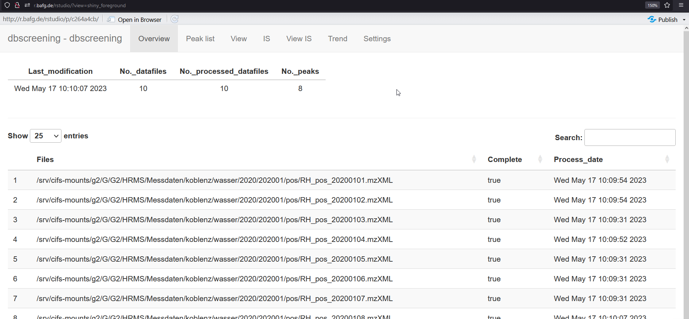
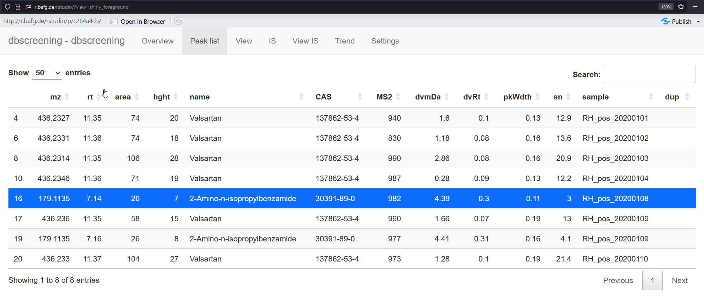
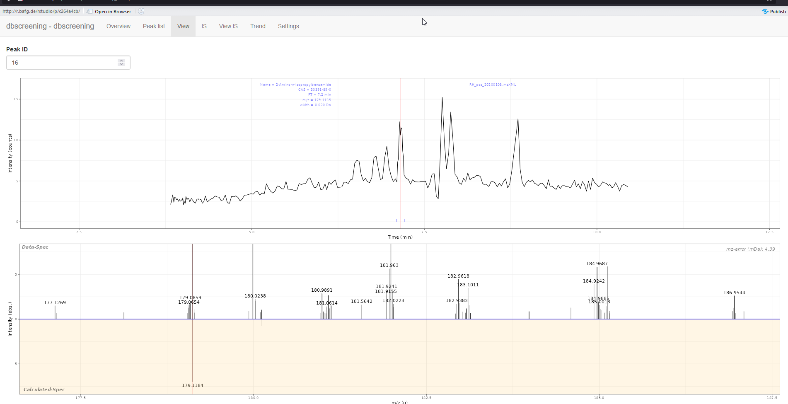
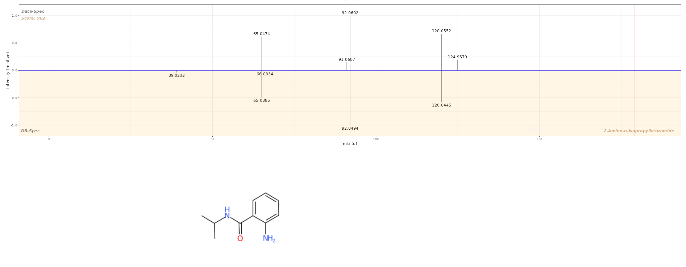
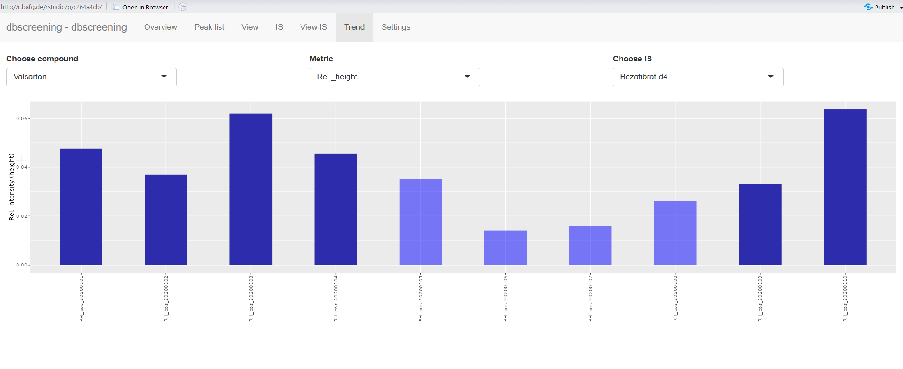

Introduction to DB-screening using ntsworkflow
Department G2 (Water Chemistry), Federal Institute of Hydrology, Koblenz
db-screening.RmdIntroduction
Data evaluation using the MS2 spectral database is carried out in the command line and visualization of the results can be done using the browser-based visualization tool. This document briefly outlines the procedure. For more details of the specific R functions please refer to the documentation in the ntsworkflow package.
Step-by-step guide
Step 2
Create new Report object, the name “test” can be anything you wish, as long as it starts with a letter and not something already used by R.
test <- Report$new()Step 3
Load some raw files, either interactively by running:
test$addRawFiles()…or you can load a file locations interactively by running:
test$addRawFilesDir()…or you can type in the file locations, e.g.
listOfFiles <- c(
"example1.mzXML",
"example2.mzXML"
)
test$addRawFiles(dialog = FALSE, normalizePath(listOfFiles))You can view the current files in the report by running
*$rawFiles. The number indicates the position of the
file.
test$rawFilesStep 4
Import an IS table. The IS table must be a csv file with 4 columns: name, formula, rt, adduct. Where formula is in the form e.g. for CBZ-IS: “C14 13CH12N 15NO”, and adduct is in the form [M+H]+, [M]+, etc. This can also be done with a dialog or by typing in the path.
# With prompt: test$addIS()
test$addIS(dialog = FALSE, "IS_table_pos.csv")
test$ISStep 5
The settings have been given default values already, to view the settings
test$settingsFor detailed explainations of what each setting does, please refer to
the documentation of Report-class, e.g. by typing
help("Report-class").
Connecting the database
The db_path variable needs to be set to location of the
database. To change any variable use the function
*$changeSettings(parameter, value), where parameter is the
name of the setting to change and value is the new value. To know what
type of values can go in each parameter, check the documentation.
test$addDB(dialog = FALSE, "example_database.db")Step 6
Process the files. This takes around 5 min in this example but could
take much longer! All files that still need processing will be loaded
into the RAM, so if you do not have much memory, add and process the
files in batches (use *.clearData() to remove data from
RAM). During processing, some information will be printed onto the
console.
test$process_all()The results are stored in different tables. The main result file, the
peak list, is stored in the *$peakList field, which is a
data.frame. For example we can access part of the peak list
by typing test$peakList[1:10, c(1:3, 13)]:
There is also a table of IS integration results.
If you want to view a specific compound’s peak, or spectrum, you can use these methods:
test$plotEIC(1) # you must provide the peakID, which is found in the peak list
test$plotMS1(1)
test$plotMS2(1)In the MS2 spectrum, the score is from 0 to 1000 and represents how good the match is (dot_product algorithm “purity”).1
Viewing the results
To view all the results in an interactive environment run the
visualisation app by executing test$view(). This starts an
interactive shiny display of the results.
There are several tabs:
Overview

You can see your uploaded files and some metadata about your current dbscreening. These images are from a full data evaluation and not the example shown above.
Peak list

You can select a compound and then click on the view tab to see the spectra.
View
Here you can see the EIC, MS1 and MS2 spectrum of the selected peak from the peak list tab. You can also directly enter peak ID at the top or scroll through all the peaks using the mouse.

You can see a comparison between the MS1 spectrum of the selected peak and the database…

… and the comparison between the MS2 spectrum and the database
Trend
This tab shows the intensity (area or height) changes of all the compounds in all samples. There is also the option to show normalized values according to a specific IS. Dark blue means the compound was identified in this sample by MS2. Light blue means this peak area is obtained by reintegration (see below). Red means there is no IS found in this sample so the IS area is estimated based on previous analysis. By zooming into the chart a peak is selected (yellow background), this peak can then be viewed in the view tab.

False positives
If you notice a false positive, you can delete this by running
test$deleteFP(name) with the name of the compound you want
to delete. It must match exactly so it is best to copy from the
peak-list.
test$deleteFP("Benzyl-dimethyl-hexadecylammonium")This will also add guanosine to the test$falsePos field.
Any compounds in this set will be deleted from all future processing
results. To obtain results from guanosine from future processing or
reprocessing, you must remove guanosine from the falsePos
field, e.g.:
test$falsePos <- test$falsePos[test$falsePos != "Guanosine"]Blank removal
If you have also processed blank files together with data files,
there is a method to remove peaks also found in the blank
test$deleteBackground(indicesData, indicesBlank, includeIS = FALSE).
This works simply by comparing the compound names, i.e., the two peaks
in blank and sample must have been assigned the same compound name for
this to work. Also, if any peaks have intensity NA (meaning
peak integration found no peak), these will be skipped and not removed.
You must indicate the indices of the “samples” and the “blanks” based on
the test$rawFiles variable. If you have problems with IS
background signals, it will also remove IS found in blank if you set
includeIS = TRUE. By default the intensity in the sample
must be within 5x the intensity in the blank if it is to be removed.
This can be changed in the test$settings$blank_int_factor
variable.
test$deleteBackground(3, 2) # will not delete IS peaks
test$deleteBackground(3, 2, includeIS = TRUE)Peak instensity of NA
A peak intensity of NA means the peak integration failed. These peaks can be removed by simple subsetting
test$peakList <- test$peakList[!is.na(test$peakList$int_a), ]Reintegration
Sometimes the MS2 is not acquired and the compound is not detected one of the samples in a long series. You can reintegrate all samples using only the exact mass and RT of each detected suspect. In this fashion no MS2 comparison is done. This is only to get better trends. Be aware that if no peak is present, the program will still try to integrate the noise, so there will sometimes be a “baseline” intensity.
test$reIntegrate()To view the reintegration results, use test$view() or
test$integRes.
Saving and loading for later use
Settings
To save the settings for later use use
test$saveSettings()This saves the settings as a .json file in the current workspace.
This can be loaded again with test$loadsettings()
Saving and loading the report
You can save your results into a .report file. Before
saving, the raw data files will be cleared from the RAM.
test$clearAndSave()
# Or, if you want to give it another name or location
test$clearAndSave("D:\\testFolder\\example_test") load a .report file back to the R environment
newName <- ntsworkflow::loadReport("example_test.report")To save any table in the report object as a csv file, use
write.csv. For German Excel, use
write.csv2.
write.csv(test$peakList, file = "new_peaklist.csv")